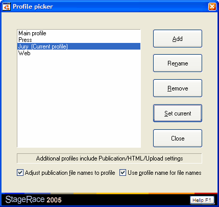

Profiles are a very powerful feature of StageRace, however, they are very easily maintainable through the Profile picker dialog that you can find through in the menu.

The picker allows to set the current profile, by selecting the desired profile in the list and choosing Set current button. Subsequently the currently set profile is indicated by the postfix "(Current profile)".
Through this dialog also new profiles can be added and a selected profile can be renamed or removed. The first, original profile that was part of this event (initially called "Main profile") can never be removed, because it holds the shared general settings, ranking settings and access settings for all profiles.
When adding or renaming a profile, the profile name can be changed in the Profile name dialog. In this dialog are also the settings shown that are explicitly kept for that profile.
Use the check boxes at the bottom of the dialog to set how publication file names are affected by profiles: